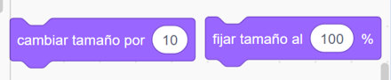
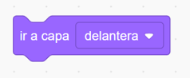

Ya sabes cómo mover los objetos en el escenario y cómo programar el sonido de tu proyecto.
Ya sabes cómo mover los objetos en el escenario y cómo programar el sonido de tu proyecto.
Es hora de que te atrevas a cambiar la apariencia del escenario y de los objetos.
Scratch te guiará de nuevo. ¡Ánimo!
Ya sabes cómo mover los objetos en el escenario y cómo programar el sonido de tu proyecto.
Es hora de que te atrevas a cambiar la apariencia del escenario y de los objetos.
Scratch te guiará de nuevo. ¡Ánimo!
 En Scratch puedes crear programas para cambiar de disfraz cuando quieras. Recuerda que los disfraces no son otra cosa que diferentes imágenes de un mismo objeto, por eso se llaman disfraces. Programando con los bloques de apariencia, los de color morado, puedes simular movimiento, cambiar de vestimenta, de color, de forma...Y además, cambiar los fondos de tu escenario. ¡Vamos, es divertidísimo!
En Scratch puedes crear programas para cambiar de disfraz cuando quieras. Recuerda que los disfraces no son otra cosa que diferentes imágenes de un mismo objeto, por eso se llaman disfraces. Programando con los bloques de apariencia, los de color morado, puedes simular movimiento, cambiar de vestimenta, de color, de forma...Y además, cambiar los fondos de tu escenario. ¡Vamos, es divertidísimo!
Tanto los objetos como el escenario pueden tener más de una apariencia o “disfraz”.
Ya sabes que en la pestaña “disfraz” puedes crear todos los disfraces que quieras de un mismo objeto.
Para poder configurar esa apariencia, en la pestaña código seleccionamos los bloques de color morado. Estos bloques te permiten controlar la apariencia del objeto/escenario: viñetas para decir o pensar, mostrarlo o esconderlo, disfraz, tamaño, efectos, posición respecto a otros objetos…

Veamos las distintas funciones de estos bloques en las siguientes páginas:
Si llevamos al área de programación los bloques “Decir…durante…segundos” o “Pensar…durante…segundos” aparecerán las viñetas correspondiente durante el tiempo indicado:

Si utilizamos los bloques “Decir” o “Pensar” necesitamos otra instrucción para que nos de tiempo a visualizarlo. Empezaremos a trabajar con los bloques de la categoría control. Si colocamos debajo el bloque “Esperar…segundos” permanecerá visible ese tiempo y luego seguirá ejecutando las siguientes instrucciones:

Para cambiar la vestimenta, color, tamaño de nuestros objetos utilizamos los siguientes bloques:
Bloque “Cambiar disfraz a…”. Seleccionamos en la cajita de dicho bloque el disfraz al que queremos que cambie.
Bloque “Siguiente disfraz”. En este caso se cambiará al siguiente disfraz que tengamos asignado para ese objeto. Cuando lleguemos al último, cambiara de nuevo al primero:

Para cambiar de fondo en nuestro escenario se actúa igual que con los disfraces, pero con los bloques “Cambiar fondo a…” o “Siguiente fondo”

Estas propiedades de apariencia se refieren a los siguientes aspectos:

Dar diferentes efectos, con los bloques “sumar al efecto…el valor…” (Incrementar el efecto) o “Dar al efecto…” (Asignar un valor).
Uno de los efectos más utilizados es el efecto color, para cambiar la tonalidad de un color; pero hay otros muchos efectos interesantes: ojo de pez, remolino, pixelar, mosaico, brillo, desvanecer… Prueba a aplicarlos a tu programa.
¡Te divertirás muchísimo!

Otras instrucciones muy útiles son:



Juega a cambiar los disfraces, los fondos de tu escenario y las propiedades de los objetos de tu proyecto. ¡Conviértete en diseñador o diseñadora!
Te propongo que practiques con los ejercicios siguientes. Como siempre están en orden de dificultad. Realiza como mínimo la opción A. Una vez que consigas resultados positivos, puedes atreverte con los siguientes.
Consigue crear algún cambio de apariencia en uno de tus objetos:
En este vídeo se explica muy bien cómo cambiar de disfraz:
Transforma a tu gusto el escenario:
Tu desafío es ahora cambiar los fondos de tu escenario. Recuerda que las instrucciones son las mismas que para cambiar un disfraz, sólo que tienes que seleccionar el fondo en lugar del objeto.
Si te has hecho un poco de lío, te recomiendo que veas este vídeo:
Ya has programado un diálogo entre dos personajes con sonido. Sincroniza ahora una conversación mediante bocadillos de texto:
Un poco de calma, este vídeo te lo explica:
¿Quieres saber más sobre mensajes? Scratch tiene una manera muy especial para pasar los mensajes de texto a voz utilizando las extensiones. Se trata de la extensión de texto a voz.
Te lo cuento en este vídeo:
Obra publicada con Licencia Creative Commons Reconocimiento Compartir igual 4.0